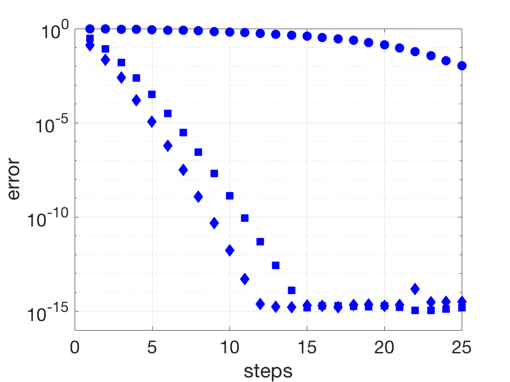

\( y=Aq_1 = \left[\begin{array}{r} 1\\1\\1 \end{array}\right] \) and we orthogonalize by \( y'=y-q_1q_1^Ty = y-h_{11}q_1 = \left[\begin{array}{r} 1\\0\\1 \end{array}\right], h_{11}=1, \) and so \(q_2= \left[\begin{array}{r} 1/\sqrt{2}\\0\\1/\sqrt{2} \end{array}\right] \) and \(h_{21}=\sqrt{2}\). The first estimate \(x_1\) is found by finding the number \(c_1\) that best fits \(\left[\begin{array}{r} 1\\ \sqrt{2} \end{array}\right] c_1 = \left[\begin{array}{r} 1\\0 \end{array}\right] \), which from the normal equations is \(c_1=1/3\). Therefore \( x_1 = Q_1c_1+x_0= \left[\begin{array}{r} 0\\1\\0 \end{array}\right] (1/3)+ \left[\begin{array}{r} 0\\0\\0 \end{array}\right]= \left[\begin{array}{c} 0\\1/3\\0 \end{array}\right]. \)
In step two, we find \( y=Aq_2 = \left[\begin{array}{r} 0\\ \sqrt{2}\\0 \end{array}\right] \) and orthogonalize by \begin{eqnarray*} y'&=&y-q_1q_1^Ty= y-h_{12}q_1 = \left[\begin{array}{r} 0\\0\\0 \end{array}\right], h_{12}=\sqrt{2}\\ y''&=&y'-q_2q_2^Ty= y-h_{22}q_2 = \left[\begin{array}{r} 0\\0\\0 \end{array}\right], h_{22}=0. \end{eqnarray*} Therefore \(h_{32}=0\), terminating the iteration. The second and final estimate \(x_2\) is found by finding the 2-vector \(c_2\) that best fits \( \left[\begin{array}{rr} 1&\sqrt{2}\\\sqrt{2}&0\\0&0 \end{array}\right] c_2 = \left[\begin{array}{r} 1\\0\\0 \end{array}\right] \), which from the normal equations is \(c_2=[0, \sqrt{2}/2]^T\). Finally \(x_2 = Q_2c_2+x_0= \left[\begin{array}{cc} 0&1/\sqrt{2}\\1&0\\0&1/\sqrt{2} \end{array}\right] \left[\begin{array}{c} 0\\ \sqrt{2}/2 \end{array}\right]+ \left[\begin{array}{c} 0\\0\\0 \end{array}\right]= \left[\begin{array}{c} 1/2\\0\\1/2 \end{array}\right] \).
